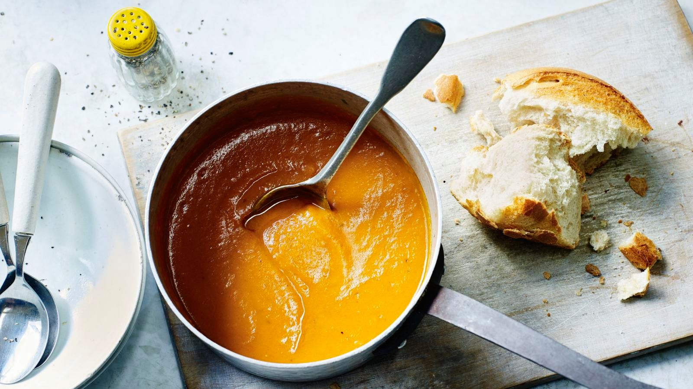

Home
Butternut Squash Soup
Ingredients
-
(2 to 3 pound) butternut squash, peeled and seeded
-
unsalted butter
-
medium onion, chopped
-
chicken stock
-
nutmeg
-
salt and black pepper

Directions
1.
Cut squash into 1-inch chunks.
2.
In large pot melt butter.
3.
Add onion and cook until translucent, about 8 minutes.
4.
Add squash and stock.
5.
Bring to a simmer and cook until squash is tender, about 15 to 20 minutes.
6.
Remove squash chunks with slotted spoon and place in a blender and puree.
7.
Return blended squash to pot.
8.
Stir and season with nutmeg, salt, and pepper.
9.
Serve!